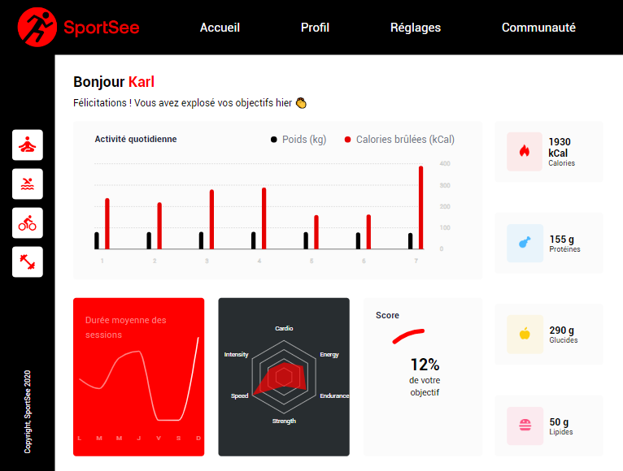

Sportsee
General informations
This project presents the 1st page of the Sportee application which will allow the user to follow the various elements relating to his sports coaching in the form of graphics. Minimum resolution : 1024 x 780px
Screenshots

Technologies and Dependencies
-
Javascript
Installation
BACKEND
- Clone the project
git clone https://github.com/OpenClassrooms-Student-Center/P9-front-end-dashboard.git
- Go to the project directory
cd P9-front-end-dashboard
- Install dependencies
npm install
FRONTEND
- Clone this project
git clone https://github.com/ascean/sportsee.git
- Go to the project directory
cd sportsee
- Install dependencies
npm install
Run the project
You need to run the backend AND the frontend
BACKEND
Start the server
npm run start
It will be running on port 3000
FRONTEND
Start the server
npm run start
To this question "Something is already running on port 3000. Would you like to run the app on another port instead? » (Y/n)", please answer Y
Finally, open http://localhost:3001 to view the application in your browser.
- Default datas :
http://localhost:3001
or
http://localhost:3001/?user_id=12
- Others datas :
http://localhost:3001/?user_id=18
##Document source code withJsDoc
Installation: npm Jsdoc installation Not necessary if you have already perform a global install. Then, run the command npm run doc
Authors
- Sandrine